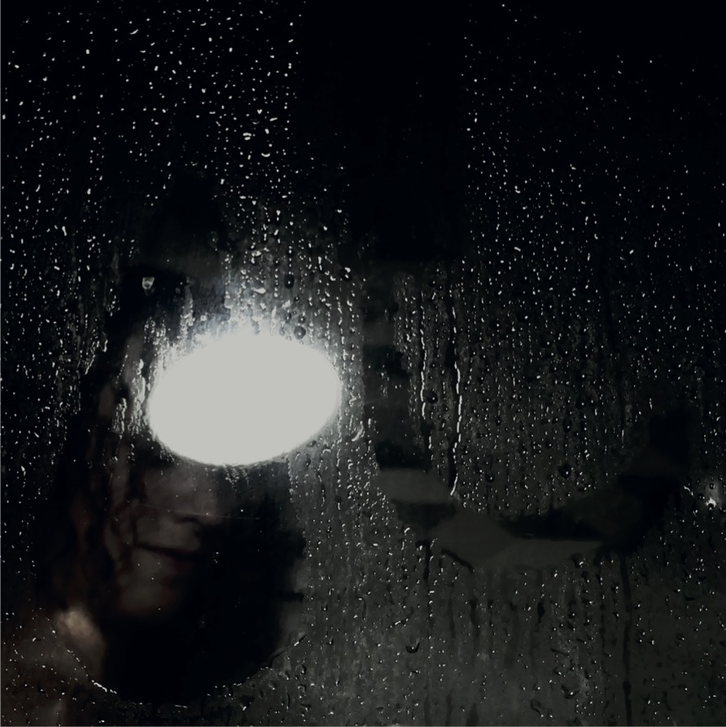
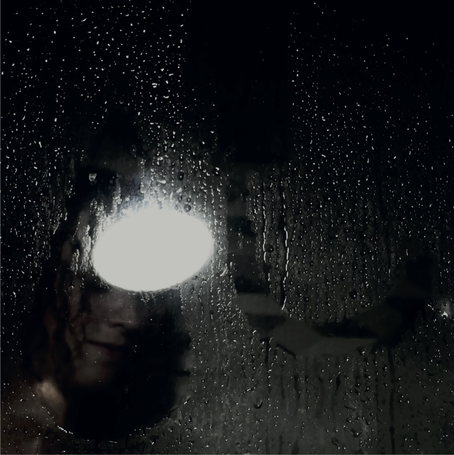

Ce visuel est celui de la musique « passion triste » de Dooz Kawa. Le thème de cette chanson porte sur la décadence du dit « système » qui s’est instauré progressivement. Il s’agit d’un cri de détresse, de l’expression du désespoir partagé par nombre de personnes. L’artiste fait le constat d’un monde désenchanté, sombre et voué à la faillite. Ainsi, il fait allusion à une fuite potentielle de ce monde.
J’ai donc traduit son point de vue par une masse oppressante, de couleur noire pour signifier le désespoir formulé par les critiques. La sensation d’enferment est renforcée par l’imbrication d’un cercle dans le format carré. Dans son œuvre l’artiste laisse paraître une posture poétique, en appelle a des images mentales, et se sert de la richesse des mots. Ainsi, j’ai précisément choisi une masse noire qui laisse se refléter la lumière et qui se fait le support d’un message.
Une autre version de cette pochette prête davantage attention à l’épaisseur poétique du texte. J’ai cherché à utiliser des représentations clichées de la tristesse (la pluie, les larmes) et à les faire dialogues avec un personnage, son visage, ses affres. Le rapport aux sensations parcourt l’œuvre, il est question d’un corps et d’un esprit sous pression.
 
